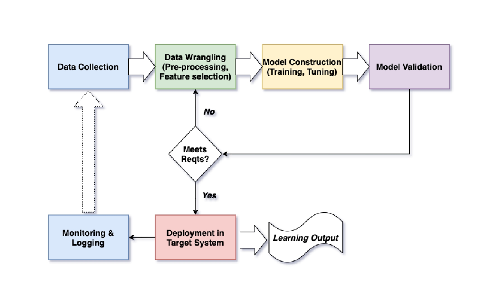

AI模型训练实践：从数据准备到模型部署
AI模型训练实践从数据准备到模型部署是一个复杂且系统化的过程，涉及多个关键步骤和阶段。以下是对这一过程的详细解析：
1. 数据准备
数据准备是AI模型训练的第一步，也是至关重要的一步。其主要任务是确保数据的质量和适用性，以便为后续的模型训练提供可靠的基础。具体步骤包括：
- 数据收集：从各种来源获取原始数据，这些数据可以是实时的或历史的，需要确保数据的多样性和代表性。
- 数据清洗与预处理：对数据进行去重、处理缺失值、过滤异常值、标准化等操作，以提高数据质量。
- 数据标注与增强：对于需要监督学习的任务，数据需要进行标注；同时，可以通过数据增强技术增加数据的多样性。
- 数据划分：将数据集划分为训练集、验证集和测试集，分别用于模型训练、参数调整和性能评估。
2. 模型选择与设计
在数据准备完成后，需要根据任务需求选择合适的模型类型，并设计模型结构。常见的模型类型包括线性回归、支持向量机、神经网络等，而深度学习模型如卷积神经网络（CNN）、循环神经网络（RNN）和Transformer等则适用于更复杂的任务。
3. 模型训练
模型训练是通过优化模型参数来提升模型性能的过程。具体步骤包括：
- 模型初始化：对模型参数进行随机初始化，避免过大或过小的值。
- 损失函数与优化器选择：定义损失函数（如均方误差、交叉熵）和优化器（如梯度下降、Adam），以最小化损失函数并更新模型参数。
- 训练与验证：使用训练集对模型进行训练，并通过验证集评估模型的泛化能力。
- 超参数调整：在训练过程中调整学习率、批次大小等超参数，以寻找最佳的训练组合。
4. 模型评估与优化
模型训练完成后，需要对模型进行评估和优化，以确保其在实际应用中的性能。评估通常使用测试集进行，评估指标包括准确率、召回率、F1分数等。如果模型性能不佳，可以通过更换模型结构、优化算法或调整超参数等方式进行优化。
5. 模型部署
模型部署是将训练好的模型应用于实际场景的过程。具体步骤包括：
- 模型导出与加载：将训练好的模型导出为适合生产环境使用的格式，并在目标环境中加载。
- 模型集成与监控：将模型与现有系统集成，确保数据流的无缝对接，并对模型进行持续监控，检测漂移、偏差和故障。
- 安全性和隐私保护：在部署过程中需重视数据的安全性和隐私保护，采取必要的措施防止敏感信息泄露。
6. 模型维护与迭代
模型部署后，还需要定期维护和迭代，以适应不断变化的数据环境和业务需求。这包括根据用户反馈和应用效果调整模型参数，甚至重新训练模型以提升性能。
总结
AI模型训练实践从数据准备到模型部署是一个循环迭代的过程，每一步都需要精心设计和优化。通过遵循上述步骤，可以构建出高效、准确的AI模型，为实际应用场景提供支持。同时，需要注意的是，不同任务和数据集可能需要调整具体的步骤和策略，以达到最佳效果。